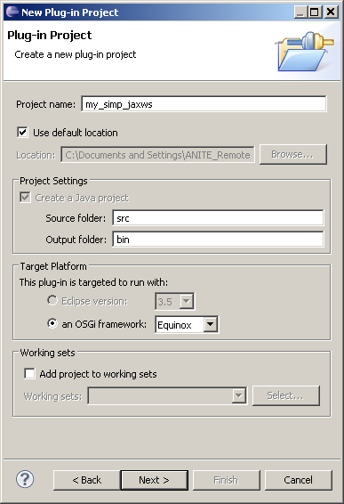
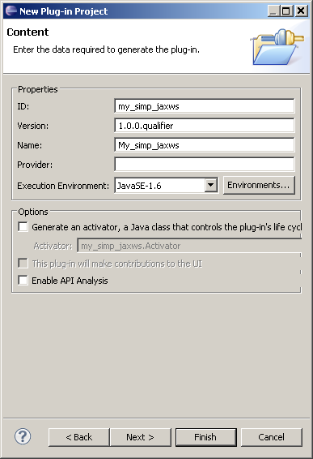

To create a simple JAX-WS service provider project:
-
Click
 .
.
-
In the New Plug-in Project wizard window, type a name for your project in the Project name field.

- Click Next.
-
In the Plug-in Content wizard window, we recommend that you clear the Generate an activator, a Java class that controls the plug-in's lifecycle check box because initialization using the Spring framework is preferred in Swordfish.

- Click Next.
-
In the JAX-WS Service Options wizard window, you can change the name of the service.
-
Click Finish.
The new service provider project is visible in your workspace.